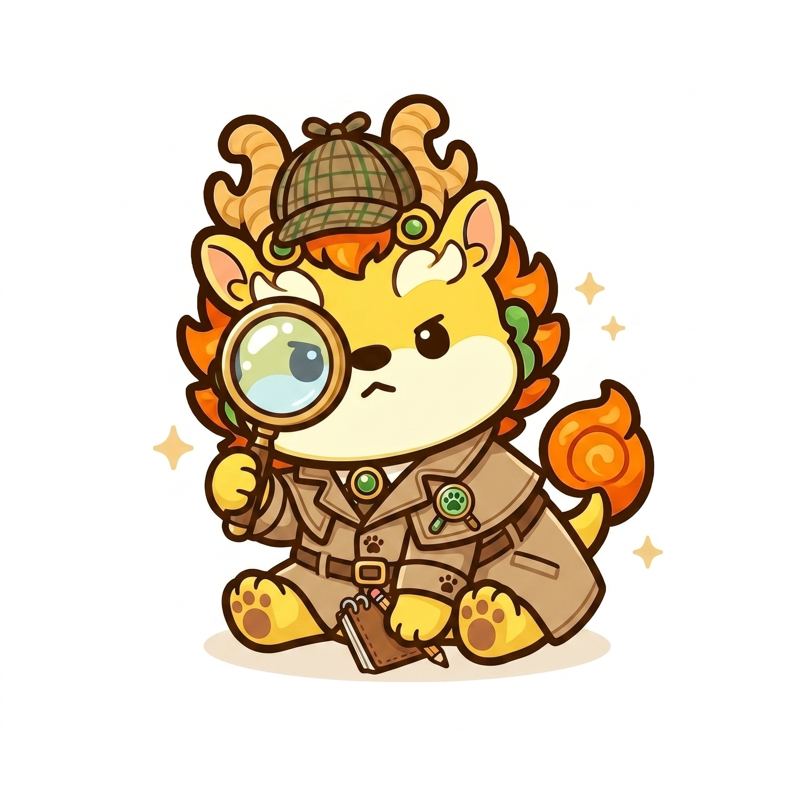

安全小偵探!GOGO
拿起手機，逐一確認家中的安全防護
首頁介紹
安全知識區
居家檢核表
繪本與有聲書
小偵探大挑戰
資料來源：國民健康署 兒童居家安全環境檢視手冊
花蓮慈濟醫院 東部兒童少年保護醫療區域整合中心
蕭宇超醫師整理
一、睡眠安全 (5不原則)
0/0
+
💡
醫師貼心提醒：
餵食完寶寶後，也要小心睡眠中的溢吐奶情形！
不趴睡：嬰兒趴睡容易發生窒息，側睡也可能翻成趴睡，仰睡為最正確的睡姿。
不用枕：嬰兒不需使用枕頭。
不同床：嬰兒與父母或多胞胎兄弟姊妹都要「同室不同床」。
不悶熱：避免環境過熱，勿讓嬰兒穿著太多衣物，需要保暖時可利用睡袋型睡衣或包巾包裹，並露出手臂及臉部。
不鬆軟：嬰兒睡眠區域，不宜有枕頭、棉被、毯子、玩偶，並且床墊應選擇平滑堅實。
二、跌倒、墜落事故預防策略
0/0
+
嬰幼兒活動範圍內地板平坦，並鋪設防滑防撞軟墊。
嬰幼兒睡床外觀無掉漆、剝落、生鏽、鬆動等狀況；附屬配件或自行加裝之附件穩固。
嬰幼兒睡床有穩固的防跌落措施，邊緣做圓角處理，若有柵欄間隙小於 6 公分。
陽台有堅固圍欄/圍牆且高度 110 公分以上，底部與地面間隔低於 15 公分。
陽台欄杆間隔小於 6 公分或有避免鑽爬裝置。
陽台不可放置可攀爬的傢俱、玩具、花盆等雜物、可供攀爬的橫式欄杆。
窗戶設有防跌落的安全裝置 (嬰幼兒無法自行開啟或加設護欄)。
樓梯欄杆完好且堅固，欄杆間距應小於 10 公分或有避免鑽爬的裝置。
樓梯的臺階高度一致，且樓梯階面貼有止滑條或止滑設施。
樓梯出入口設有高於 85 公分，間隔小於 6公分及幼童不易開啟之穩固柵欄，可防止幼童跌落。
三、壓砸夾刺撞傷事故預防策略
0/0
+
電器用品放置平穩不易傾倒。
電扇具有細格防護網。
鐵捲門開關及遙控器放在嬰幼兒無法觸碰的地方。
鐵捲門裝有偵測到物體則立即停止之安全裝置。
傢俱家飾 (如雕塑品、花瓶、壁掛物等) 平穩牢固，不易滑動或翻倒。
傢具無凸角或銳利邊緣，或已做安全處理。
櫥櫃加裝嬰幼兒不易開啟之裝置。
餐桌或茶几未舖桌巾。
抽屜加裝嬰幼兒不易開啟之安全釦環 (或上鎖)。
摺疊家具 (桌椅、梯子、燙馬) 置於嬰幼兒無法觸碰的地方。
盡量避免使用孔洞椅子以避免手指卡住。
維修工具、尖利刀器、易燃物品、電池、零碎物件、化妝飾品、塑膠袋等危險物品收納於嬰幼兒無法碰觸的地方。
四、燒燙傷事故預防策略
0/0
+
插座及電線固定、隱蔽或置高於 110 公分。
加裝安全保護蓋於未使用之插座。
座立式檯燈、飲水機、熱水瓶、微波爐、烤箱、電熨斗、電熱器、捕蚊燈置於嬰幼兒無法觸碰的地方。
針對烤箱或微波爐等有門的電器，可使用防開啟裝置避免幼童開啟。
洗澡將熱水器水溫設定在攝氏 50°C 以下。
將易燃燒物品(蠟燭、打火機、火柴)收在兒童無法拿取的地方。
五、窒息與溺水事故預防策略
0/0
+
窗簾拉繩為嬰幼兒無法觸碰的高度。
密閉電器 (如：洗衣機、烘乾機、冰箱等) 嬰幼兒無法自行開啟，或放置位置遠離嬰幼兒。
家中若有大型容器（如：浴缸、水桶等），無人使用時不可儲水。
避免讓小孩接近塑膠袋、有拉鍊的袋子、柔軟枕頭。
建立安全的兒童睡眠環境，尤其是四個月以下頸椎尚未發育完全的嬰幼兒。
玩具附有之繩索或鬆緊帶套環，絕不能超過 15-20 公分。
六、梗塞、異物吞食預防策略
0/0
+
電池、零碎物件、磁鐵、化妝飾品等收納於嬰幼兒無法碰觸的地方。
小孩哭泣、奔跑時、玩耍時應避免同時餵食物。
避免讓四歲以下幼兒吞食可能引起異物梗塞的固體食物（如果凍、軟糖、糖果、含骨頭肉類、整顆種子與堅果、有籽的水果與整口花生醬等）。
選擇有國內外商品檢驗標識的玩具且玩具零件必須牢固（如 ST 標誌、CE 標誌、ASTM 標誌）。
玩具本身及其零件須大於直徑 3.2 公分；長度必須大於 5.7 公分；球型玩具或擠壓玩具直徑須大於 4.5 公分。